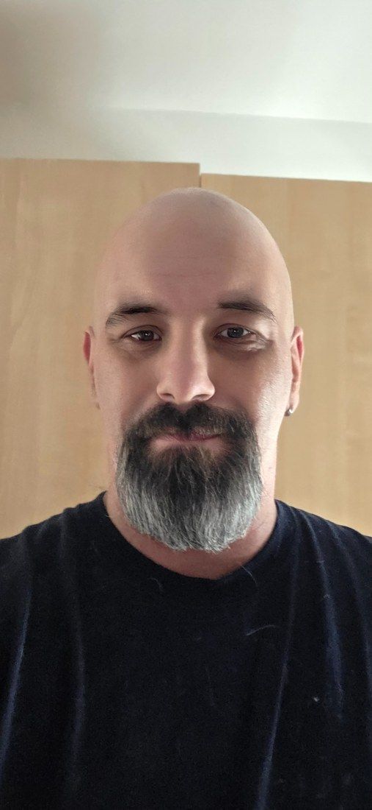

Fondateur du Projet Nova
Benoit Cantin
Ville de Québec — Beauport
Benoit Cantin est le fondateur du Projet Nova. Il travaille à structurer une proposition politique québécoise fondée sur la souveraineté populaire, l’intégrité publique, la transparence, la responsabilité des décideurs et la modernisation des institutions.
Refondation nationaleTransparenceResponsabilité publique